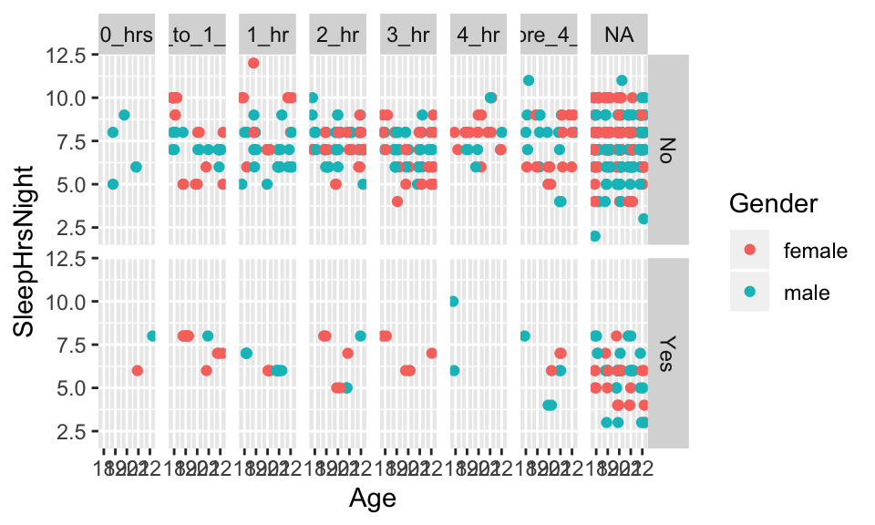
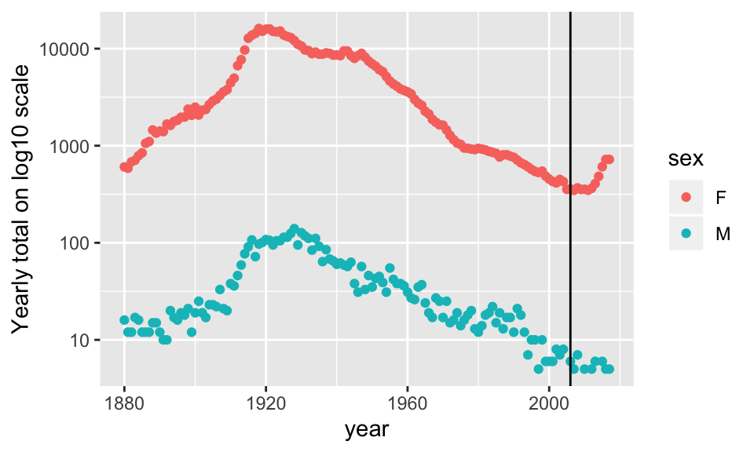
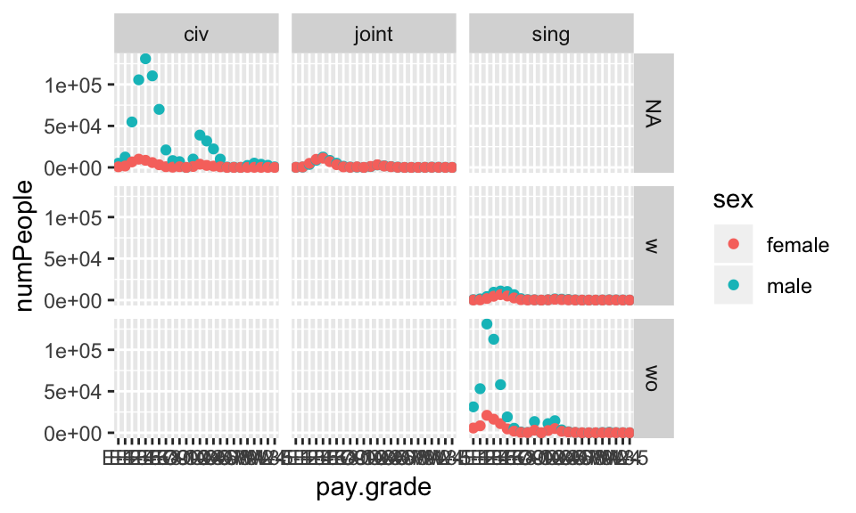

Chapter 2 Data Wrangling
As with data visualization, data wrangling is a fundamental part of being able to accurately, reproducibly, and efficiently work with data. The approach taken in the following chapter is based on the philosophy of tidy data and takes many of its precepts from database theory. If you have done much work in SQL, the functionality and approach of tidy data will feel very familiar. The more adept you are at data wrangling, the more effective you will be at data analysis.
Information is what we want, but data are what we’ve got. (Kaplan 2015)
Embrace all the ways to get help!
- cheat sheets: https://www.rstudio.com/resources/cheatsheets/
- tidyverse vignettes: https://www.tidyverse.org/articles/2019/09/tidyr-1-0-0/
- pivoting: https://tidyr.tidyverse.org/articles/pivot.html
- google what you need and include
R tidyortidyverse
2.1 Structure of Data
For plotting, analyses, model building, etc., it’s important that the data be structured in a very particular way. Hadley Wickham provides a thorough discussion and advice for cleaning up the data in Wickham (2014).
- Tidy Data: rows (cases/observational units) and columns (variables). The key is that every row is a case and every column is a variable. No exceptions.
- Creating tidy data is not trivial. We work with objects (often data tables), functions, and arguments (often variables).
The Active Duty data are not tidy! What are the cases? How are the data not tidy? What might the data look like in tidy form? Suppose that the case was “an individual in the armed forces.” What variables would you use to capture the information in the following table?

Problem: totals and different sheets
Better for R: longer format with columns - grade, gender, status, service, count (case is still the total pay grade)
Case is individual (?): grade, gender, status, service (no count because each row does the counting)
2.1.1 Building Tidy Data
Within R (really within any type of computing language, Python, SQL, Java, etc.), we need to understand how to build data using the patterns of the language. Some things to consider:
object_name = function_name(data_table, arguments)is a way of using a function to create a new object.object_name = data_table %>% function_name(arguments)uses chaining syntax as an extension of the ideas of functions. In chaining, the value on the left side of%>%becomes the first argument to the function on the right side.
object_name = data_table %>%
function_name(arguments) %>%
function_name(other arguments)is extended chaining. %>% is never at the front of the line, it is always connecting one idea with the continuation of that idea on the next line.
* In R, all functions take arguments in round parentheses (as opposed to subsetting observations or variables from data objects which happen with square parentheses). Additionally, the spot to the left of %>% is always a data table.
* The pipe syntax should be read as then, %>%.
2.1.2 Examples of Chaining
The pipe syntax (%>%) takes a data frame (or data table) and sends it to the argument of a function. The mapping goes to the first available argument in the function. For example:
x %>% f(y) is the same as f(x, y)
y %>% f(x, ., z) is the same as f(x,y,z)
2.1.2.1 Little Bunny Foo Foo
From Hadley Wickham, how to think about tidy data.
Little bunny Foo Foo
Went hopping through the forest
Scooping up the field mice
And bopping them on the head
The nursery rhyme could be created by a series of steps where the output from each step is saved as an object along the way.
foo_foo <- little_bunny()
foo_foo_1 <- hop(foo_foo, through = forest)
foo_foo_2 <- scoop(foo_foo_2, up = field_mice)
foo_foo_3 <- bop(foo_foo_2, on = head)Another approach is to concatenate the functions so that there is only one output.
bop(
scoop(
hop(foo_foo, through = forest),
up = field_mice),
on = head)Or even worse, as one line:
bop(scoop(hop(foo_foo, through = forest), up = field_mice), on = head)))Instead, the code can be written using the pipe in the order in which the function is evaluated:
foo_foo %>%
hop(through = forest) %>%
scoop(up = field_mice) %>%
bop(on = head)babynames Each year, the US Social Security Administration publishes a list of the most popular names given to babies. In 2014, http://www.ssa.gov/oact/babynames/#ht=2 shows Emma and Olivia leading for girls, Noah and Liam for boys.
The babynames data table in the babynames package comes from the Social Security Administration’s listing of the names givens to babies in each year, and the number of babies of each sex given that name. (Only names with 5 or more babies are published by the SSA.)
2.1.3 Data Verbs (on single data frames)
Super important resource: The RStudio
dplyrcheat sheet: https://github.com/rstudio/cheatsheets/raw/master/data-transformation.pdf
Data verbs take data tables as input and give data tables as output (that’s how we can use the chaining syntax!). We will use the R package dplyr to do much of our data wrangling. Below is a list of verbs which will be helpful in wrangling many different types of data. See the Data Wrangling cheat sheet from RStudio for additional help. https://www.rstudio.com/wp-content/uploads/2015/02/data-wrangling-cheatsheet.pdf}
sample_n()take a random row(s)head()grab the first few rowstail()grab the last few rowsfilter()removes unwanted *cases}arrange()reorders the casesselect()removes unwanted *variables} (andrename())distinct()returns the unique values in a tablemutate()transforms the variable (andtransmute()like mutate, returns only new variables)group_by()group_bytells R that SUCCESSIVE functions keep in mind that there are groups of items. Sogroup_byonly makes sense with variables later on (likesummarize).summarize()collapses a data frame to a single row. Not useful yet (will be useful withgroup_by()). Some functions that are used withinsummarize()include: \begin{itemize}min(), max(), mean(), sum(), sd(), median(), andIQR()n(): number of observations in the current groupn_distinct(x): count the number of unique values inxfirst_value(x), last_value(x)andnth_value(x, n): work similarly tox[1], x[length(x)], andx[n]
2.2 R examples, basic verbs
2.2.1 Datasets
starwars is from dplyr , although originally from SWAPI, the Star Wars API, http://swapi.co/.
NHANES From ?NHANES: NHANES is survey data collected by the US National Center for Health Statistics (NCHS) which has conducted a series of health and nutrition surveys since the early 1960’s. Since 1999 approximately 5,000 individuals of all ages are interviewed in their homes every year and complete the health examination component of the survey. The health examination is conducted in a mobile examination center (MEC).
babynames Each year, the US Social Security Administration publishes a list of the most popular names given to babies. In 2018, http://www.ssa.gov/oact/babynames/#ht=2 shows Emma and Olivia leading for girls, Noah and Liam for boys. (Only names with 5 or more babies are published by the SSA.)
2.2.2 Examples of Chaining
## [1] 1924665## [1] "year" "sex" "name" "n" "prop"## Observations: 1,924,665
## Variables: 5
## $ year <dbl> 1880, 1880, 1880, 1880, 1880, 1880, 1880, 1880, 1880, 1880,…
## $ sex <chr> "F", "F", "F", "F", "F", "F", "F", "F", "F", "F", "F", "F",…
## $ name <chr> "Mary", "Anna", "Emma", "Elizabeth", "Minnie", "Margaret", …
## $ n <int> 7065, 2604, 2003, 1939, 1746, 1578, 1472, 1414, 1320, 1288,…
## $ prop <dbl> 0.07238359, 0.02667896, 0.02052149, 0.01986579, 0.01788843,…## # A tibble: 6 x 5
## year sex name n prop
## <dbl> <chr> <chr> <int> <dbl>
## 1 1880 F Mary 7065 0.0724
## 2 1880 F Anna 2604 0.0267
## 3 1880 F Emma 2003 0.0205
## 4 1880 F Elizabeth 1939 0.0199
## 5 1880 F Minnie 1746 0.0179
## 6 1880 F Margaret 1578 0.0162## # A tibble: 6 x 5
## year sex name n prop
## <dbl> <chr> <chr> <int> <dbl>
## 1 2017 M Zyhier 5 0.00000255
## 2 2017 M Zykai 5 0.00000255
## 3 2017 M Zykeem 5 0.00000255
## 4 2017 M Zylin 5 0.00000255
## 5 2017 M Zylis 5 0.00000255
## 6 2017 M Zyrie 5 0.00000255## # A tibble: 5 x 5
## year sex name n prop
## <dbl> <chr> <chr> <int> <dbl>
## 1 1982 F Laqueen 5 0.00000276
## 2 1946 F Corrina 5 0.0000031
## 3 2003 M Kenderick 11 0.00000524
## 4 1930 F Yetta 40 0.0000343
## 5 1989 F Mali 8 0.00000402## sex min Q1 median Q3 max mean sd n missing
## 1 F 5 7 11 31 99686 151.4294 1180.557 1138293 0
## 2 M 5 7 12 33 94756 223.4940 1932.338 786372 02.2.3 Data Verbs
Taken from the dplyr tutorial: http://dplyr.tidyverse.org/
2.2.3.1 Starwars
## [1] 87 13## [1] "name" "height" "mass" "hair_color" "skin_color"
## [6] "eye_color" "birth_year" "gender" "homeworld" "species"
## [11] "films" "vehicles" "starships"## # A tibble: 6 x 13
## name height mass hair_color skin_color eye_color birth_year gender
## <chr> <int> <dbl> <chr> <chr> <chr> <dbl> <chr>
## 1 Luke… 172 77 blond fair blue 19 male
## 2 C-3PO 167 75 <NA> gold yellow 112 <NA>
## 3 R2-D2 96 32 <NA> white, bl… red 33 <NA>
## 4 Dart… 202 136 none white yellow 41.9 male
## 5 Leia… 150 49 brown light brown 19 female
## 6 Owen… 178 120 brown, gr… light blue 52 male
## # … with 5 more variables: homeworld <chr>, species <chr>, films <list>,
## # vehicles <list>, starships <list>## gender min Q1 median Q3 max mean sd n
## 1 female 45 49.25 52.5 55.90 75 54.02000 8.37215 10
## 2 hermaphrodite 1358 1358.00 1358.0 1358.00 1358 1358.00000 NA 1
## 3 male 15 76.50 80.0 87.25 159 81.00455 28.22371 44
## 4 none 140 140.00 140.0 140.00 140 140.00000 NA 1
## missing
## 1 9
## 2 0
## 3 18
## 4 1## # A tibble: 5 x 13
## name height mass hair_color skin_color eye_color birth_year gender
## <chr> <int> <dbl> <chr> <chr> <chr> <dbl> <chr>
## 1 C-3PO 167 75 <NA> gold yellow 112 <NA>
## 2 R2-D2 96 32 <NA> white, bl… red 33 <NA>
## 3 R5-D4 97 32 <NA> white, red red NA <NA>
## 4 IG-88 200 140 none metal red 15 none
## 5 BB8 NA NA none none black NA none
## # … with 5 more variables: homeworld <chr>, species <chr>, films <list>,
## # vehicles <list>, starships <list>## gender min Q1 median Q3 max mean sd n
## 1 female 45 50.0 55 56.20 75 54.68889 8.591921 9
## 2 hermaphrodite 1358 1358.0 1358 1358.00 1358 1358.00000 NA 1
## 3 male 15 76.5 80 87.25 159 81.00455 28.223707 44
## missing
## 1 7
## 2 0
## 3 16## # A tibble: 87 x 4
## name hair_color skin_color eye_color
## <chr> <chr> <chr> <chr>
## 1 Luke Skywalker blond fair blue
## 2 C-3PO <NA> gold yellow
## 3 R2-D2 <NA> white, blue red
## 4 Darth Vader none white yellow
## 5 Leia Organa brown light brown
## 6 Owen Lars brown, grey light blue
## 7 Beru Whitesun lars brown light blue
## 8 R5-D4 <NA> white, red red
## 9 Biggs Darklighter black light brown
## 10 Obi-Wan Kenobi auburn, white fair blue-gray
## # … with 77 more rowsstarwars %>%
dplyr::mutate(name, bmi = mass / ((height / 100) ^ 2)) %>%
dplyr::select(name:mass, bmi)## # A tibble: 87 x 4
## name height mass bmi
## <chr> <int> <dbl> <dbl>
## 1 Luke Skywalker 172 77 26.0
## 2 C-3PO 167 75 26.9
## 3 R2-D2 96 32 34.7
## 4 Darth Vader 202 136 33.3
## 5 Leia Organa 150 49 21.8
## 6 Owen Lars 178 120 37.9
## 7 Beru Whitesun lars 165 75 27.5
## 8 R5-D4 97 32 34.0
## 9 Biggs Darklighter 183 84 25.1
## 10 Obi-Wan Kenobi 182 77 23.2
## # … with 77 more rows## # A tibble: 87 x 13
## name height mass hair_color skin_color eye_color birth_year gender
## <chr> <int> <dbl> <chr> <chr> <chr> <dbl> <chr>
## 1 Jabb… 175 1358 <NA> green-tan… orange 600 herma…
## 2 Grie… 216 159 none brown, wh… green, y… NA male
## 3 IG-88 200 140 none metal red 15 none
## 4 Dart… 202 136 none white yellow 41.9 male
## 5 Tarf… 234 136 brown brown blue NA male
## 6 Owen… 178 120 brown, gr… light blue 52 male
## 7 Bossk 190 113 none green red 53 male
## 8 Chew… 228 112 brown unknown blue 200 male
## 9 Jek … 180 110 brown fair blue NA male
## 10 Dext… 198 102 none brown yellow NA male
## # … with 77 more rows, and 5 more variables: homeworld <chr>,
## # species <chr>, films <list>, vehicles <list>, starships <list>starwars %>%
dplyr::group_by(species) %>%
dplyr::summarize(
num = n(),
mass = mean(mass, na.rm = TRUE)
) %>%
dplyr::filter(num > 1)## # A tibble: 9 x 3
## species num mass
## <chr> <int> <dbl>
## 1 Droid 5 69.8
## 2 Gungan 3 74
## 3 Human 35 82.8
## 4 Kaminoan 2 88
## 5 Mirialan 2 53.1
## 6 Twi'lek 2 55
## 7 Wookiee 2 124
## 8 Zabrak 2 80
## 9 <NA> 5 482.2.3.2 NHANES
## [1] "ID" "SurveyYr" "Gender"
## [4] "Age" "AgeDecade" "AgeMonths"
## [7] "Race1" "Race3" "Education"
## [10] "MaritalStatus" "HHIncome" "HHIncomeMid"
## [13] "Poverty" "HomeRooms" "HomeOwn"
## [16] "Work" "Weight" "Length"
## [19] "HeadCirc" "Height" "BMI"
## [22] "BMICatUnder20yrs" "BMI_WHO" "Pulse"
## [25] "BPSysAve" "BPDiaAve" "BPSys1"
## [28] "BPDia1" "BPSys2" "BPDia2"
## [31] "BPSys3" "BPDia3" "Testosterone"
## [34] "DirectChol" "TotChol" "UrineVol1"
## [37] "UrineFlow1" "UrineVol2" "UrineFlow2"
## [40] "Diabetes" "DiabetesAge" "HealthGen"
## [43] "DaysPhysHlthBad" "DaysMentHlthBad" "LittleInterest"
## [46] "Depressed" "nPregnancies" "nBabies"
## [49] "Age1stBaby" "SleepHrsNight" "SleepTrouble"
## [52] "PhysActive" "PhysActiveDays" "TVHrsDay"
## [55] "CompHrsDay" "TVHrsDayChild" "CompHrsDayChild"
## [58] "Alcohol12PlusYr" "AlcoholDay" "AlcoholYear"
## [61] "SmokeNow" "Smoke100" "Smoke100n"
## [64] "SmokeAge" "Marijuana" "AgeFirstMarij"
## [67] "RegularMarij" "AgeRegMarij" "HardDrugs"
## [70] "SexEver" "SexAge" "SexNumPartnLife"
## [73] "SexNumPartYear" "SameSex" "SexOrientation"
## [76] "PregnantNow"# find the sleep variables
NHANESsleep <- NHANES %>% select(Gender, Age, Weight, Race1, Race3,
Education, SleepTrouble, SleepHrsNight,
TVHrsDay, TVHrsDayChild, PhysActive)
names(NHANESsleep)## [1] "Gender" "Age" "Weight" "Race1"
## [5] "Race3" "Education" "SleepTrouble" "SleepHrsNight"
## [9] "TVHrsDay" "TVHrsDayChild" "PhysActive"## [1] 10000 11# subset for college students
NHANESsleep <- NHANESsleep %>% filter(Age %in% c(18:22)) %>%
mutate(Weightlb = Weight*2.2)
names(NHANESsleep)## [1] "Gender" "Age" "Weight" "Race1"
## [5] "Race3" "Education" "SleepTrouble" "SleepHrsNight"
## [9] "TVHrsDay" "TVHrsDayChild" "PhysActive" "Weightlb"## [1] 655 12NHANESsleep %>% ggplot(aes(x=Age, y=SleepHrsNight, color=Gender)) +
geom_point(position=position_jitter(width=.25, height=0) ) +
facet_grid(SleepTrouble ~ TVHrsDay) 
2.2.4 summarize and group_by
## # A tibble: 1 x 1
## `n()`
## <int>
## 1 10000# total weight of all the people in NHANES (silly)
NHANES %>% mutate(Weightlb = Weight*2.2) %>% summarize(sum(Weightlb, na.rm=TRUE))## # A tibble: 1 x 1
## `sum(Weightlb, na.rm = TRUE)`
## <dbl>
## 1 1549419.# mean weight of all the people in NHANES
NHANES %>% mutate(Weightlb = Weight*2.2) %>% summarize(mean(Weightlb, na.rm=TRUE))## # A tibble: 1 x 1
## `mean(Weightlb, na.rm = TRUE)`
## <dbl>
## 1 156.# repeat the above but for groups
# males versus females
NHANES %>% group_by(Gender) %>% summarize(n())## # A tibble: 2 x 2
## Gender `n()`
## <fct> <int>
## 1 female 5020
## 2 male 4980NHANES %>% group_by(Gender) %>% mutate(Weightlb = Weight*2.2) %>%
summarize(mean(Weightlb, na.rm=TRUE))## # A tibble: 2 x 2
## Gender `mean(Weightlb, na.rm = TRUE)`
## <fct> <dbl>
## 1 female 146.
## 2 male 167.## # A tibble: 3 x 2
## SmokeNow `n()`
## <fct> <int>
## 1 No 1745
## 2 Yes 1466
## 3 <NA> 6789NHANES %>% group_by(SmokeNow) %>% mutate(Weightlb = Weight*2.2) %>%
summarize(mean(Weightlb, na.rm=TRUE))## # A tibble: 3 x 2
## SmokeNow `mean(Weightlb, na.rm = TRUE)`
## <fct> <dbl>
## 1 No 186.
## 2 Yes 177.
## 3 <NA> 144.## # A tibble: 3 x 2
## Diabetes `n()`
## <fct> <int>
## 1 No 9098
## 2 Yes 760
## 3 <NA> 142NHANES %>% group_by(Diabetes) %>% mutate(Weightlb = Weight*2.2) %>%
summarize(mean(Weightlb, na.rm=TRUE))## # A tibble: 3 x 2
## Diabetes `mean(Weightlb, na.rm = TRUE)`
## <fct> <dbl>
## 1 No 155.
## 2 Yes 202.
## 3 <NA> 21.6# break down the smokers versus non-smokers further, by sex
NHANES %>% group_by(SmokeNow, Gender) %>% summarize(n())## # A tibble: 6 x 3
## # Groups: SmokeNow [3]
## SmokeNow Gender `n()`
## <fct> <fct> <int>
## 1 No female 764
## 2 No male 981
## 3 Yes female 638
## 4 Yes male 828
## 5 <NA> female 3618
## 6 <NA> male 3171NHANES %>% group_by(SmokeNow, Gender) %>% mutate(Weightlb = Weight*2.2) %>%
summarize(mean(Weightlb, na.rm=TRUE))## # A tibble: 6 x 3
## # Groups: SmokeNow [3]
## SmokeNow Gender `mean(Weightlb, na.rm = TRUE)`
## <fct> <fct> <dbl>
## 1 No female 167.
## 2 No male 201.
## 3 Yes female 167.
## 4 Yes male 185.
## 5 <NA> female 138.
## 6 <NA> male 151.# break down the people with diabetes further, by smoking
NHANES %>% group_by(Diabetes, SmokeNow) %>% summarize(n())## # A tibble: 8 x 3
## # Groups: Diabetes [3]
## Diabetes SmokeNow `n()`
## <fct> <fct> <int>
## 1 No No 1476
## 2 No Yes 1360
## 3 No <NA> 6262
## 4 Yes No 267
## 5 Yes Yes 106
## 6 Yes <NA> 387
## 7 <NA> No 2
## 8 <NA> <NA> 140NHANES %>% group_by(Diabetes, SmokeNow) %>% mutate(Weightlb = Weight*2.2) %>%
summarize(mean(Weightlb, na.rm=TRUE))## # A tibble: 8 x 3
## # Groups: Diabetes [3]
## Diabetes SmokeNow `mean(Weightlb, na.rm = TRUE)`
## <fct> <fct> <dbl>
## 1 No No 183.
## 2 No Yes 175.
## 3 No <NA> 143.
## 4 Yes No 204.
## 5 Yes Yes 204.
## 6 Yes <NA> 199.
## 7 <NA> No 193.
## 8 <NA> <NA> 19.12.2.5 babynames
## # A tibble: 2 x 2
## sex total
## <chr> <int>
## 1 F 172371079
## 2 M 175749438## # A tibble: 6 x 3
## # Groups: year [3]
## year sex name_count
## <dbl> <chr> <int>
## 1 1880 F 942
## 2 1880 M 1058
## 3 1881 F 938
## 4 1881 M 997
## 5 1882 F 1028
## 6 1882 M 1099## # A tibble: 6 x 3
## # Groups: year [3]
## year sex name_count
## <dbl> <chr> <int>
## 1 2015 F 19074
## 2 2015 M 14024
## 3 2016 F 18817
## 4 2016 M 14162
## 5 2017 F 18309
## 6 2017 M 14160## .
## 1890 1904 1907 1909 1926 1930 1931 1933 1939 1945 1949 1952 1953 1960 1963
## 1 1 1 1 1 1 1 1 1 1 1 1 1 1 1
## 1964 1966 1970 1976 1977 1980 1981 1984 1986 1988 1994 1995 1998 1999 2000
## 1 1 1 1 1 1 1 1 1 1 1 1 1 1 1
## 2001 2002 2005 2006 2008 2009 2012 2013 2014 2016 2017
## 1 1 1 1 1 1 1 1 1 1 1## .
## 1890 1904 1907 1909 1926 1930 1931 1933 1939 1945 1949 1952 1953 1960 1963
## 1 1 2 1 1 1 1 1 1 1 1 1 1 1 1
## 1964 1966 1970 1976 1977 1980 1981 1984 1986 1988 1994 1995 1998 1999 2000
## 1 1 1 1 2 1 1 1 1 1 1 2 3 1 2
## 2001 2002 2005 2006 2008 2009 2012 2013 2014 2016 2017
## 1 1 1 2 1 2 1 1 2 1 1Frances <- babynames %>%
filter(name== "Frances") %>%
group_by(year, sex) %>%
summarize(yrTot = sum(n))
Frances %>% ggplot(aes(x=year, y=yrTot)) +
geom_point(aes(color=sex)) +
geom_vline(xintercept=2006) + scale_y_log10() +
ylab("Yearly total on log10 scale")
2.3 Higher Level Data Verbs
There are more complicated verbs which may be important for more sophisticated analyses. See the RStudio dplyr cheat sheet, https://www.rstudio.com/wp-content/uploads/2015/02/data-wrangling-cheatsheet.pdf}.
pivot_longermakes many columns into 2 columns:pivot_longer(data, cols, names_to = , value_to = )pivot_widermakes one column into multiple columns:pivot_wider(data, names_from = , values_from = )left_joinreturns all rows from the left table, and any rows with matching keys from the right table.inner_joinreturns only the rows in which the left table have matching keys in the right table (i.e., matching rows in both sets).full_joinreturns all rows from both tables, join records from the left which have matching keys in the right table.
Good practice: always specify the by argument when joining data frames.

If you ever need to understand which join is the right join for you, try to find an image that will lay out what the function is doing. I found this one that is quite good and is taken from Statistics Globe blog: https://statisticsglobe.com/r-dplyr-join-inner-left-right-full-semi-anti
2.4 R examples, higher level verbs
tidyr 1.0.0 has just been released! The new release means that you need to update tidyr. You will know if you have the latest version if the following command works in the console (window below):
?tidyr::pivot_longerIf you are familiar with spread and gather, you should acquaint yourself with pivot_longer() and pivot_wider(). The idea is to go from very wide dataframes to very long dataframes and vice versa.
2.4.1 pivot_longer
pivot the military pay grade to become longer?
https://docs.google.com/spreadsheets/d/1Ow6Cm4z-Z1Yybk3i352msulYCEDOUaOghmo9ALajyHo/edit# gid=1811988794
library(googlesheets4)
sheets_deauth()
navy_gs = read_sheet("https://docs.google.com/spreadsheets/d/1Ow6Cm4z-Z1Yybk3i352msulYCEDOUaOghmo9ALajyHo/edit#gid=1877566408",
col_types = "ccnnnnnnnnnnnnnnn")## Observations: 38
## Variables: 17
## $ ...1 <chr> NA, NA, NA, NA, NA, NA, NA, NA, NA, NA, NA,…
## $ `Active Duty Family` <chr> NA, "Marital Status Report", NA, "Data Refl…
## $ ...3 <dbl> NA, NA, NA, NA, NA, NA, NA, NA, 31229, 5309…
## $ ...4 <dbl> NA, NA, NA, NA, NA, NA, NA, NA, 5717, 8388,…
## $ ...5 <dbl> NA, NA, NA, NA, NA, NA, NA, NA, 36946, 6148…
## $ ...6 <dbl> NA, NA, NA, NA, NA, NA, NA, NA, 563, 1457, …
## $ ...7 <dbl> NA, NA, NA, NA, NA, NA, NA, NA, 122, 275, 1…
## $ ...8 <dbl> NA, NA, NA, NA, NA, NA, NA, NA, 685, 1732, …
## $ ...9 <dbl> NA, NA, NA, NA, NA, NA, NA, NA, 139, 438, 3…
## $ ...10 <dbl> NA, NA, NA, NA, NA, NA, NA, NA, 141, 579, 4…
## $ ...11 <dbl> NA, NA, NA, NA, NA, NA, NA, NA, 280, 1017, …
## $ ...12 <dbl> NA, NA, NA, NA, NA, NA, NA, NA, 5060, 12483…
## $ ...13 <dbl> NA, NA, NA, NA, NA, NA, NA, NA, 719, 1682, …
## $ ...14 <dbl> NA, NA, NA, NA, NA, NA, NA, NA, 5779, 14165…
## $ ...15 <dbl> NA, NA, NA, NA, NA, NA, NA, NA, 36991, 6747…
## $ ...16 <dbl> NA, NA, NA, NA, NA, NA, NA, NA, 6699, 10924…
## $ ...17 <dbl> NA, NA, NA, NA, NA, NA, NA, NA, 43690, 7839…names(navy_gs) = c("X","pay.grade", "male.sing.wo", "female.sing.wo",
"tot.sing.wo", "male.sing.w", "female.sing.w",
"tot.sing.w", "male.joint.NA", "female.joint.NA",
"tot.joint.NA", "male.civ.NA", "female.civ.NA",
"tot.civ.NA", "male.tot.NA", "female.tot.NA",
"tot.tot.NA")
navy = navy_gs[-c(1:8), -1]
dplyr::glimpse(navy)## Observations: 30
## Variables: 16
## $ pay.grade <chr> "E-1", "E-2", "E-3", "E-4", "E-5", "E-6", "E-7",…
## $ male.sing.wo <dbl> 31229, 53094, 131091, 112710, 57989, 19125, 5446…
## $ female.sing.wo <dbl> 5717, 8388, 21019, 16381, 11021, 4654, 1913, 438…
## $ tot.sing.wo <dbl> 36946, 61482, 152110, 129091, 69010, 23779, 7359…
## $ male.sing.w <dbl> 563, 1457, 4264, 9491, 10937, 10369, 6530, 1786,…
## $ female.sing.w <dbl> 122, 275, 1920, 4662, 6576, 4962, 2585, 513, 144…
## $ tot.sing.w <dbl> 685, 1732, 6184, 14153, 17513, 15331, 9115, 2299…
## $ male.joint.NA <dbl> 139, 438, 3579, 8661, 12459, 8474, 5065, 1423, 4…
## $ female.joint.NA <dbl> 141, 579, 4902, 9778, 11117, 6961, 3291, 651, 15…
## $ tot.joint.NA <dbl> 280, 1017, 8481, 18439, 23576, 15435, 8356, 2074…
## $ male.civ.NA <dbl> 5060, 12483, 54795, 105556, 130944, 110322, 7000…
## $ female.civ.NA <dbl> 719, 1682, 6641, 9961, 8592, 5827, 3206, 820, 29…
## $ tot.civ.NA <dbl> 5779, 14165, 61436, 115517, 139536, 116149, 7320…
## $ male.tot.NA <dbl> 36991, 67472, 193729, 236418, 212329, 148290, 87…
## $ female.tot.NA <dbl> 6699, 10924, 34482, 40782, 37306, 22404, 10995, …
## $ tot.tot.NA <dbl> 43690, 78396, 228211, 277200, 249635, 170694, 98…# get rid of total columns & rows:
navyWR = navy %>% dplyr::select(-contains("tot")) %>%
dplyr::filter(substr(pay.grade, 1, 5) != "TOTAL" &
substr(pay.grade, 1, 5) != "GRAND" ) %>%
tidyr::pivot_longer(-pay.grade,
values_to = "numPeople",
names_to = "status") %>%
tidyr::separate(status, into = c("sex", "marital", "kids"))
navyWR %>% head()## # A tibble: 6 x 5
## pay.grade sex marital kids numPeople
## <chr> <chr> <chr> <chr> <dbl>
## 1 E-1 male sing wo 31229
## 2 E-1 female sing wo 5717
## 3 E-1 male sing w 563
## 4 E-1 female sing w 122
## 5 E-1 male joint NA 139
## 6 E-1 female joint NA 141Does a graph tell us if we did it right? what if we had done it wrong…?
navyWR %>% ggplot(aes(x=pay.grade, y=numPeople, color=sex)) +
geom_point() + facet_grid(kids~marital)
2.4.2 pivot_wider
library(babynames)
babynames %>% dplyr::select(-prop) %>%
tidyr::pivot_wider(names_from = sex, values_from = n) %>%
head()## # A tibble: 6 x 4
## year name F M
## <dbl> <chr> <int> <int>
## 1 1880 Mary 7065 27
## 2 1880 Anna 2604 12
## 3 1880 Emma 2003 10
## 4 1880 Elizabeth 1939 9
## 5 1880 Minnie 1746 9
## 6 1880 Margaret 1578 NAbabynames %>%
dplyr::select(-prop) %>%
tidyr::pivot_wider(names_from = sex, values_from = n) %>%
dplyr::filter(!is.na(F) & !is.na(M)) %>%
arrange(desc(year), desc(M))## # A tibble: 168,381 x 4
## year name F M
## <dbl> <chr> <int> <int>
## 1 2017 Liam 36 18728
## 2 2017 Noah 170 18326
## 3 2017 William 18 14904
## 4 2017 James 77 14232
## 5 2017 Logan 1103 13974
## 6 2017 Benjamin 8 13733
## 7 2017 Mason 58 13502
## 8 2017 Elijah 26 13268
## 9 2017 Oliver 15 13141
## 10 2017 Jacob 16 13106
## # … with 168,371 more rowsbabynames %>%
tidyr::pivot_wider(names_from = sex, values_from = n) %>%
dplyr::filter(!is.na(F) & !is.na(M)) %>%
arrange(desc(prop))## # A tibble: 12 x 5
## year name prop F M
## <dbl> <chr> <dbl> <int> <int>
## 1 1986 Marquette 0.0000130 24 25
## 2 1996 Dariel 0.0000115 22 23
## 3 2014 Laramie 0.0000108 21 22
## 4 1939 Earnie 0.00000882 10 10
## 5 1939 Vertis 0.00000882 10 10
## 6 1921 Vernis 0.00000703 9 8
## 7 1939 Alvia 0.00000529 6 6
## 8 1939 Eudell 0.00000529 6 6
## 9 1939 Ladell 0.00000529 6 6
## 10 1939 Lory 0.00000529 6 6
## 11 1939 Maitland 0.00000529 6 6
## 12 1939 Delaney 0.00000441 5 52.4.3 join (use join to merge two datasets)
2.4.3.1 First get the data (GapMinder)
Both of the following datasets come from GapMinder. The first represents country, year, and female literacy rate. The second represents country, year, and GDP (in fixed 2000 US$).
sheets_deauth()
litF = read_sheet("https://docs.google.com/spreadsheets/d/1hDinTIRHQIaZg1RUn6Z_6mo12PtKwEPFIz_mJVF6P5I/pub?gid=0")
litF = litF %>% dplyr::select(country=starts_with("Adult"),
starts_with("1"), starts_with("2")) %>%
tidyr::pivot_longer(-country,
names_to = "year",
values_to = "litRateF") %>%
dplyr::filter(!is.na(litRateF))sheets_deauth()
GDP = read_sheet("https://docs.google.com/spreadsheets/d/1RctTQmKB0hzbm1E8rGcufYdMshRdhmYdeL29nXqmvsc/pub?gid=0")
GDP = GDP %>% dplyr::select(country = starts_with("Income"),
starts_with("1"), starts_with("2")) %>%
tidyr::pivot_longer(-country,
names_to = "year",
values_to = "gdp") %>%
dplyr::filter(!is.na(gdp))## # A tibble: 6 x 3
## country year litRateF
## <chr> <chr> <dbl>
## 1 Afghanistan 1979 4.99
## 2 Afghanistan 2011 13
## 3 Albania 2001 98.3
## 4 Albania 2008 94.7
## 5 Albania 2011 95.7
## 6 Algeria 1987 35.8## # A tibble: 6 x 3
## country year gdp
## <chr> <chr> <dbl>
## 1 Albania 1980 1061.
## 2 Albania 1981 1100.
## 3 Albania 1982 1111.
## 4 Albania 1983 1101.
## 5 Albania 1984 1065.
## 6 Albania 1985 1060.## [1] 571 4## [1] 66## # A tibble: 6 x 4
## country year litRateF gdp
## <chr> <chr> <dbl> <dbl>
## 1 Afghanistan 1979 4.99 NA
## 2 Afghanistan 2011 13 NA
## 3 Albania 2001 98.3 1282.
## 4 Albania 2008 94.7 1804.
## 5 Albania 2011 95.7 1966.
## 6 Algeria 1987 35.8 1902.## [1] 7988 4## [1] 0## # A tibble: 6 x 4
## country year litRateF gdp
## <chr> <chr> <dbl> <dbl>
## 1 Albania 1980 NA 1061.
## 2 Albania 1981 NA 1100.
## 3 Albania 1982 NA 1111.
## 4 Albania 1983 NA 1101.
## 5 Albania 1984 NA 1065.
## 6 Albania 1985 NA 1060.## [1] 505 4## [1] 0## # A tibble: 6 x 4
## country year litRateF gdp
## <chr> <chr> <dbl> <dbl>
## 1 Albania 2001 98.3 1282.
## 2 Albania 2008 94.7 1804.
## 3 Albania 2011 95.7 1966.
## 4 Algeria 1987 35.8 1902.
## 5 Algeria 2002 60.1 1872.
## 6 Algeria 2006 63.9 2125.## [1] 8054 4## [1] 66## # A tibble: 6 x 4
## country year litRateF gdp
## <chr> <chr> <dbl> <dbl>
## 1 Afghanistan 1979 4.99 NA
## 2 Afghanistan 2011 13 NA
## 3 Albania 2001 98.3 1282.
## 4 Albania 2008 94.7 1804.
## 5 Albania 2011 95.7 1966.
## 6 Algeria 1987 35.8 1902.2.4.4 lubridate
lubridate is a another R package meant for data wrangling (Grolemund and Wickham 2011). In particular, lubridate makes it very easy to work with days, times, and dates. The base idea is to start with dates in a ymd (year month day) format and transform the information into whatever you want. The linked table is from the original paper and provides many of the basic lubridate commands: http://blog.yhathq.com/static/pdf/R_date_cheat_sheet.pdf}.
Example from https://cran.r-project.org/web/packages/lubridate/vignettes/lubridate.html
2.4.4.1 If anyone drove a time machine, they would crash
The length of months and years change so often that doing arithmetic with them can be unintuitive. Consider a simple operation, January 31st + one month. Should the answer be:
- February 31st (which doesn’t exist)
- March 4th (31 days after January 31), or
- February 28th (assuming its not a leap year)
A basic property of arithmetic is that a + b - b = a. Only solution 1 obeys the mathematical property, but it is an invalid date. Wickham wants to make lubridate as consistent as possible by invoking the following rule: if adding or subtracting a month or a year creates an invalid date, lubridate will return an NA.
If you thought solution 2 or 3 was more useful, no problem. You can still get those results with clever arithmetic, or by using the special %m+% and %m-% operators. %m+% and %m-% automatically roll dates back to the last day of the month, should that be necessary.
2.4.4.2 R examples, lubridate
Some basics in lubridate
## [1] 16## [1] 3## [1] 1## [1] Jan
## 12 Levels: Jan < Feb < Mar < Apr < May < Jun < Jul < Aug < Sep < ... < Dec## [1] 2020## [1] 34## [1] 9## [1] 16## [1] 16## [1] 5## [1] Thu
## Levels: Sun < Mon < Tue < Wed < Thu < Fri < SatBut how do I create a date object?
## [1] "2013-01-31" NA "2013-03-31" NA "2013-05-31"
## [6] NA "2013-07-31" "2013-08-31" NA "2013-10-31"
## [11] NA "2013-12-31"## [1] "2013-02-01" "2013-03-04" "2013-04-01" "2013-05-02" "2013-06-01"
## [6] "2013-07-02" "2013-08-01" "2013-09-01" "2013-10-02" "2013-11-01"
## [11] "2013-12-02" "2014-01-01"## [1] "2013-03-03" NA "2013-05-01" NA "2013-07-01"
## [6] NA "2013-08-31" "2013-10-01" NA "2013-12-01"
## [11] NA "2014-01-31"## [1] "2013-01-31" "2013-02-28" "2013-03-31" "2013-04-30" "2013-05-31"
## [6] "2013-06-30" "2013-07-31" "2013-08-31" "2013-09-30" "2013-10-31"
## [11] "2013-11-30" "2013-12-31"NYC flights
## [1] "year" "month" "day" "dep_time"
## [5] "sched_dep_time" "dep_delay" "arr_time" "sched_arr_time"
## [9] "arr_delay" "carrier" "flight" "tailnum"
## [13] "origin" "dest" "air_time" "distance"
## [17] "hour" "minute" "time_hour"flightsWK <- flights %>%
mutate(ymdday = ymd(paste(year, month,day, sep="-"))) %>%
mutate(weekdy = wday(ymdday, label=TRUE),
whichweek = week(ymdday))
head(flightsWK)## # A tibble: 6 x 22
## year month day dep_time sched_dep_time dep_delay arr_time
## <int> <int> <int> <int> <int> <dbl> <int>
## 1 2013 1 1 517 515 2 830
## 2 2013 1 1 533 529 4 850
## 3 2013 1 1 542 540 2 923
## 4 2013 1 1 544 545 -1 1004
## 5 2013 1 1 554 600 -6 812
## 6 2013 1 1 554 558 -4 740
## # … with 15 more variables: sched_arr_time <int>, arr_delay <dbl>,
## # carrier <chr>, flight <int>, tailnum <chr>, origin <chr>, dest <chr>,
## # air_time <dbl>, distance <dbl>, hour <dbl>, minute <dbl>,
## # time_hour <dttm>, ymdday <date>, weekdy <ord>, whichweek <dbl>flightsWK <- flights %>%
mutate(ymdday = ymd(paste(year,"-", month,"-",day))) %>%
mutate(weekdy = wday(ymdday, label=TRUE), whichweek = week(ymdday))
flightsWK %>% select(year, month, day, ymdday, weekdy, whichweek, dep_time,
arr_time, air_time) %>%
head()## # A tibble: 6 x 9
## year month day ymdday weekdy whichweek dep_time arr_time air_time
## <int> <int> <int> <date> <ord> <dbl> <int> <int> <dbl>
## 1 2013 1 1 2013-01-01 Tue 1 517 830 227
## 2 2013 1 1 2013-01-01 Tue 1 533 850 227
## 3 2013 1 1 2013-01-01 Tue 1 542 923 160
## 4 2013 1 1 2013-01-01 Tue 1 544 1004 183
## 5 2013 1 1 2013-01-01 Tue 1 554 812 116
## 6 2013 1 1 2013-01-01 Tue 1 554 740 150References
Grolemund, G., and H. Wickham. 2011. “Dates and Times Made Easy with lubridate.” Journal of Statistical Software 40 (3). http://www.jstatsoft.org/v40/i03/paper.
Kaplan, Daniel. 2015. Data Computing: An Introduction to Wrangling and Visualization with R. Project Mosaic Books.
Wickham, Hadley. 2014. “Tidy Data.” Journal of Statistical Software 59 (10). http://www.jstatsoft.org/v59/i10/paper.